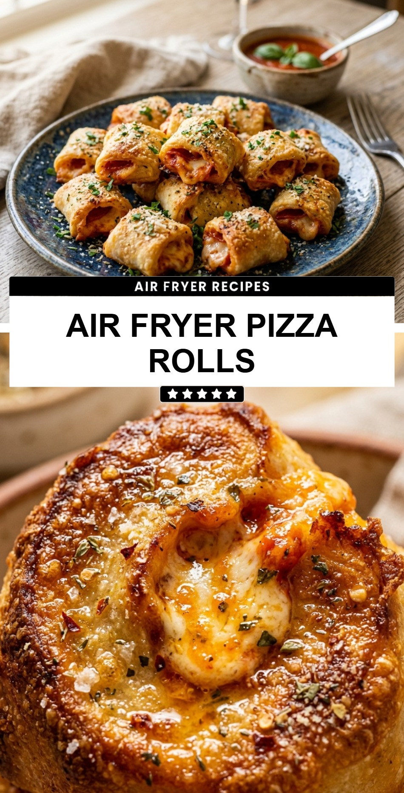

Air Fryer Pizza Rolls
October 19, 2026

There is nothing quite like a plate of crispy, golden-brown pizza rolls when you are craving a quick snack. While the microwave is fast, it often leaves these bite-sized treats soggy. The oven takes too long to preheat and cook through. That is where the air fryer comes in as the absolute hero of snacking.
Recipe Information
Prep Time: 2 minutes
Cook Time: 8 minutes
Total Time: 10 minutes
Servings: 2 servings
Difficulty Level: Easy
Nutrition Information
Calories per serving: 440 kcal
Protein: 10g
Carbohydrates: 52g
Fat: 21g
Fiber: 2g
Sugar: 5g
Sodium: 780mg